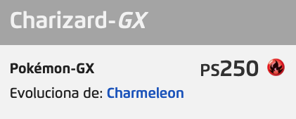
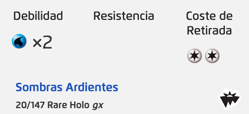

|  |  |
|---|---|
|
Pokémon Trading Card Game (en español Pokémon: Juego de Cartas Coleccionables) es un juego de cartas coleccionables competitivo para dos jugadores basado en la saga de videojuegos Pokémon. La primera edición del juego de cartas, inspirada por el éxito de los videojuegos Pokémon Rojo y Pokémon Azul fue lanzada en 1996 en Japón por la empresa Media Factory. Debido a su gran éxito en el mercado nipón, en 1999 el juego se lanzó en Estados Unidos y Europa. Desde entonces se han ido comercializando periódicamente nuevas expansiones que añaden nuevos Pokémon y cartas al juego. El lanzamiento de nuevas expansiones suele coincidir con el lanzamiento de nuevas entregas en la saga de videojuegos homónima. Los derechos de propiedad y distribución comercial en todo el mundo corresponden a The Pokémon Company, filial de la multinacional japonesa Nintendo. |
|